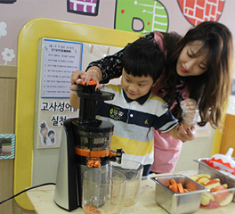
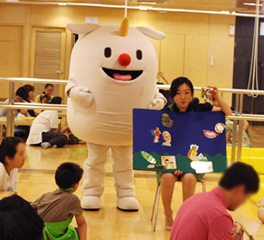
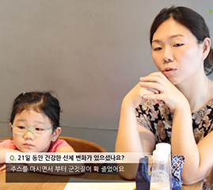

사회공헌
사회공헌
-
교육어린이 식습관 개선교육강좌 어린이 식습관 개선교육강좌
휴롬은 백화점과 대형마트 등에서 어린이를 대상으로 ‘ 어린이 건강한 식습관 교육’을 지속적으로 이어오며 매 학기마다 새로운 프로그램으로 진행되고 있습니다.
2018-01-05 -
교육어린이 식습관 개선교육강좌 어린이 식습관 개선교육강좌
신나는 놀이교실로 채소,과일에 친숙해져요. 휴롬은 백화점과 대형마트 등에서 어린이를 대상으 신나는 놀이교실로 채소,과일에 친숙해져요. 휴롬은 백화점과 대형마트 등에서 어린이를 대상으
2018-01-02 -
교육휴롬.농식품부와 함께 휴롬.농식품부와 함께..
휴롬이 어린이 바른 식생활 실천 교육에 앞장섭니다.올해로 5년째. 휴롬의 대표적 사회공헌활동 휴롬이 어린이 바른 식생활 실천 교육에 앞장섭니다.올해로 5년째. 휴롬의 대표적 사회공헌활동..
2017-10-16 -
교육 휴롬.농식품부와 함 휴롬.농식품부와 함..
어린이집에서 신선한 채소,과일을 맛있게 주스로 마셔요 올해로 5년째. 휴롬의 대표적 사회공헌 어린이집에서 신선한 채소,과일을 맛있게 주스로 마셔요 올해로 5년째. 휴롬의 대표적 사회공헌..
2017-10-13 -
교육자연체험 가족여행 자연체험 가족여행 ..
휴롬과 함께 청계 목장에서 자연을 만끽하세요휴롬은 자연에서 채소과일에 친숙해지고, 고유의 휴롬과 함께 청계 목장에서 자연을 만끽하세요휴롬은 자연에서 채소과일에 친숙해지고, 고유의 ..
2017-07-03 -
교육 어린이 식습관 개선 어린이 식습관 개선..
놀이활동으로 채소과일과 친숙해져요 휴롬은 농림축산식품부가 함께 백화점과 대형마트 등 에서 놀이활동으로 채소과일과 친숙해져요 휴롬은 농림축산식품부가 함께 백화점과 대형마트 등 에서 ..
2017-06-09 -
교육어린이 식습관 개선 어린이 식습관 개선..
잘 먹지 않는 채소도 맛있게 잘 먹어요 휴롬은 농림축산식품부가 함께 백화점과 대형마트 등 에 잘 먹지 않는 채소도 맛있게 잘 먹어요 휴롬은 농림축산식품부가 함께 백화점과 대형마트 등 에..
2017-05-17 -
교육자연체험 가족여행 자연체험 가족여행 ..
딸기농장으로 가족여행 떠나요작년에 이어 올해도 도농 교류 활성화와 온 가족이 채소, 과일을 딸기농장으로 가족여행 떠나요작년에 이어 올해도 도농 교류 활성화와 온 가족이 채소, 과일을 ..
2017-05-11 -
캐릭터건강 요정 휴휴와 건강 요정 휴휴와 ..
휴롬 캐릭터 휴휴와 휴니콘을 소개합니다.‘어린이 식습관 캠페인’ 교육을 위해선 어른이 나서 휴롬 캐릭터 휴휴와 휴니콘을 소개합니다.‘어린이 식습관 캠페인’ 교육을 위해선 어른이 나서 ..
2017-02-21 -
캠페인 21일 식습관의 법칙(4) 21일 식습관의 법칙(4)..
21일간의 놀라운 변화!6월 27일 사전 건강검진으로 시작한 ‘21일 식습관의 법칙’ 프로젝트는8 21일간의 놀라운 변화!6월 27일 사전 건강검진으로 시작한 ‘21일 식습관의 법칙’ 프로젝트는8..
2017-02-20 -
캠페인21일 식습관의 법칙(3) 21일 식습관의 법칙(3)..
매일 아침 신선한 천연주스가 배달돼요!‘21일 식습관의 법칙’ 프로젝트에 가장 중요한 역할을 매일 아침 신선한 천연주스가 배달돼요!‘21일 식습관의 법칙’ 프로젝트에 가장 중요한 역할을 ..
2017-02-20 -
캠페인21일 식습관의 법칙(2) 21일 식습관의 법칙(2)..
천연주스가 주는 정서적 변화를 알기 위해, 예술심리검사를 실시했어요.2016년 7월 5일, 휴롬 도 천연주스가 주는 정서적 변화를 알기 위해, 예술심리검사를 실시했어요.2016년 7월 5일, 휴롬 도..
2017-02-20 -
캠페인21일 식습관의 법칙(1) 21일 식습관의 법칙(1)..
캠페인 참여를 위해, 가족 건강 검진을 실시했어요.무엇이든 21일간 지속되면 습관이 된다는 ‘2 캠페인 참여를 위해, 가족 건강 검진을 실시했어요.무엇이든 21일간 지속되면 습관이 된다는 ‘2..
2017-02-20 -
캠페인콜롬비아 어린이 영양 콜롬비아 어린이 영양..
지구반대편 중남미 콜롬비아의 어린이 식습관개선을 위해!휴롬은 건강을 생각하는 이념으로 성장 지구반대편 중남미 콜롬비아의 어린이 식습관개선을 위해!휴롬은 건강을 생각하는 이념으로 성장..
2017-02-20 -
교육자연체험 가족여행 <여 자연체험 가족여행 <여..
휴롬과 함께 여주 오감 도토리 마을로 떠나요~!도시의 가족들이 농촌마을에서 자연을 배우고 건 휴롬과 함께 여주 오감 도토리 마을로 떠나요~!도시의 가족들이 농촌마을에서 자연을 배우고 건..
2017-02-20 -
교육식습관 개선 교육강좌 식습관 개선 교육강좌
“어린이 편식 예방해요” 농림축산식품부와 함께 백화점과 대형마트 등에서 어린이들의 편식 “어린이 편식 예방해요” 농림축산식품부와 함께 백화점과 대형마트 등에서 어린이들의 편식..
2017-02-07 -
캠페인21일 식습관의 법칙 21일 식습관의 법칙
휴롬, 대한민국 가족건강 프로젝트 '21일 식습관의 법칙' 진행지난 2016년 6월에 진행한 대한민 휴롬, 대한민국 가족건강 프로젝트 '21일 식습관의 법칙' 진행지난 2016년 6월에 진행한 대한민..
2017-02-07 -
교육휴니콘 유튜브 채널 개 휴니콘 유튜브 채널 개..
휴니콘, 유튜브에서 만나요.휴롬이 어린이들의 식습관 개선을 위해 만든 건강 캐릭터 '휴니콘' 휴니콘, 유튜브에서 만나요.휴롬이 어린이들의 식습관 개선을 위해 만든 건강 캐릭터 '휴니콘' ..
2017-02-07 -
교육농림축산식품부 민관합 농림축산식품부 민관합..
휴롬과 농림축산식품부가 MOU를 체결하고 민관합동으로 함께 진행한 사업으로, 수도권의 20개 유 휴롬과 농림축산식품부가 MOU를 체결하고 민관합동으로 함께 진행한 사업으로, 수도권의 20개 유..
2017-01-25 -
교육휴니콘과 함께하는 식 휴니콘과 함께하는 식..
‘문화센터 식습관 개선교육’은 유통 3사 롯데마트, 홈플러스, 이마트 문화센터와 제휴하여 식 ‘문화센터 식습관 개선교육’은 유통 3사 롯데마트, 홈플러스, 이마트 문화센터와 제휴하여 식..
2017-01-24 -
교육자연체험 가족여행
‘이야기가 있는 체험학습소’는 어린이들을 대상으로 국산 채소·과일을 소재로 한 농장형 체험 ‘이야기가 있는 체험학습소’는 어린이들을 대상으로 국산 채소·과일을 소재로 한 농장형 체험..
2017-01-24 -
교육어린이 식습관 개선 캠 어린이 식습관 개선 캠..
올바른 식습관 캠페인 사업은 인스턴트 식품에 길들여진 어린이들의 입맛을 바로 잡아 올바른 식 올바른 식습관 캠페인 사업은 인스턴트 식품에 길들여진 어린이들의 입맛을 바로 잡아 올바른 식..
2017-01-24